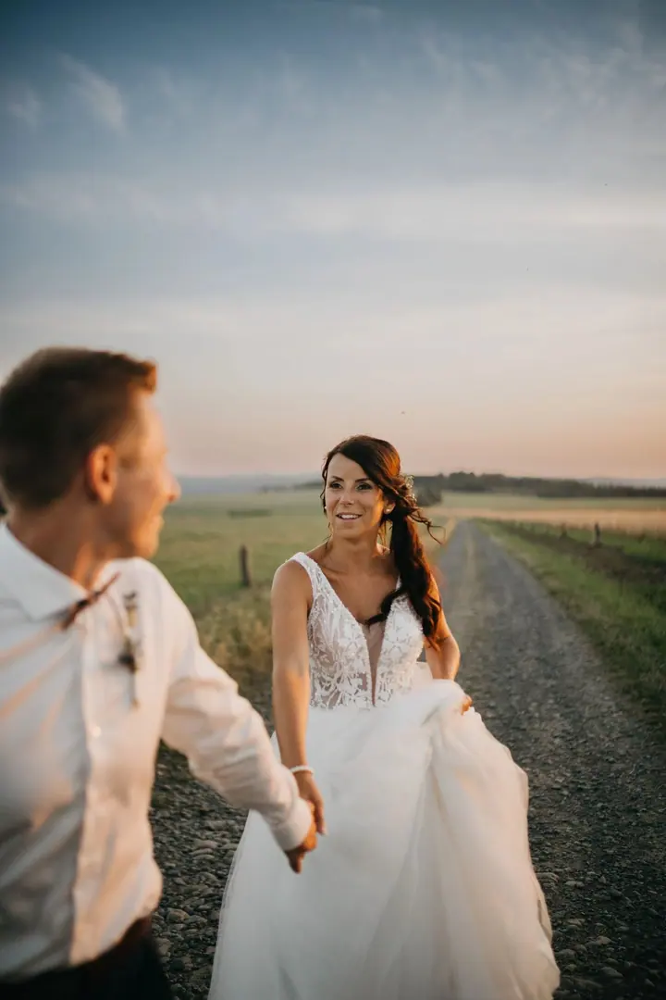
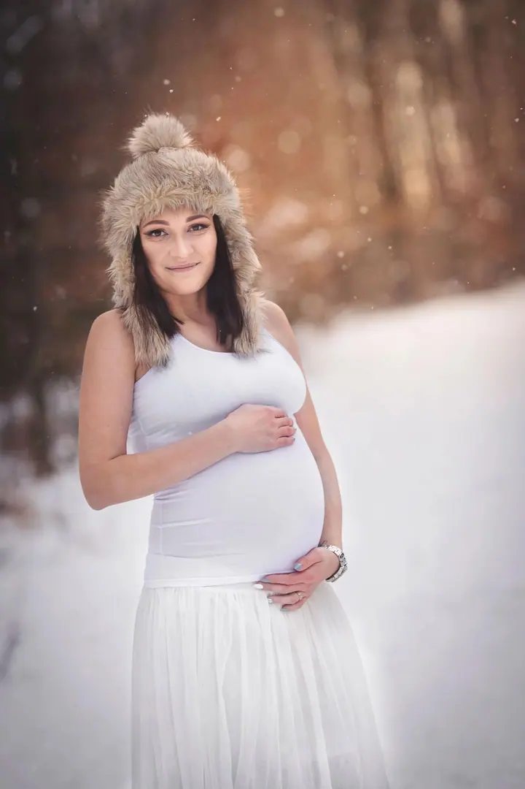
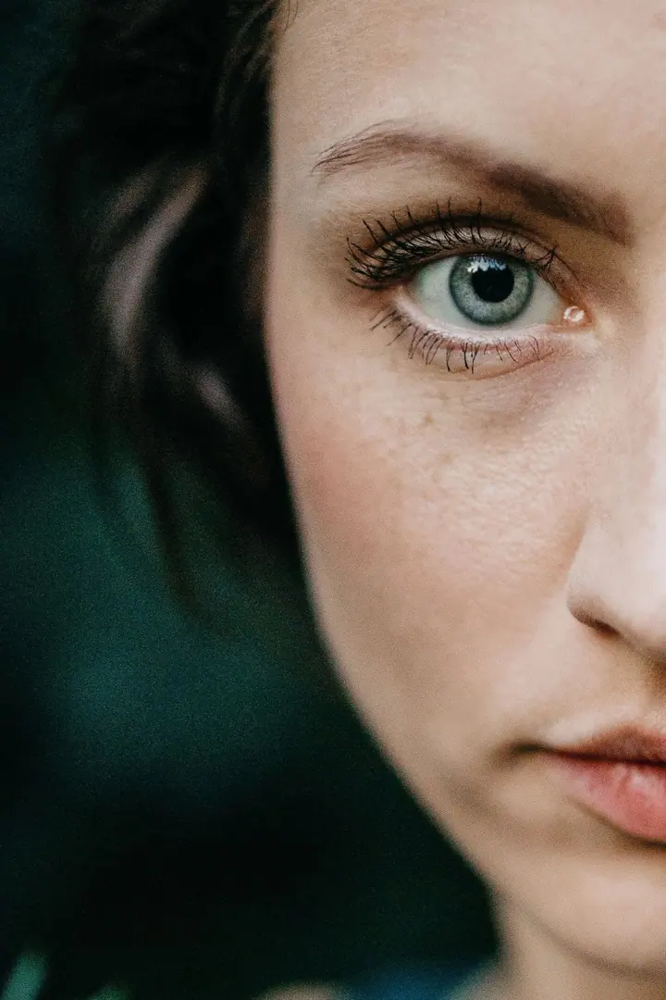
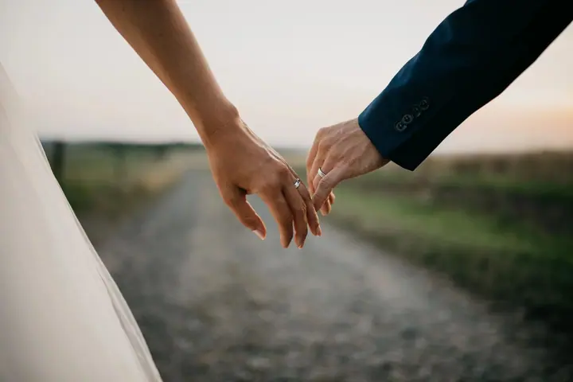

Svatební focení
Svatby fotím po celé České republice, celý den nebo jen jeho část. Hledám dojatou babičku, ženichův úsměv i to, co si spolu šeptáte při společném focení.

Jmenuji se Dominika Mlýnková a pod značkou Fotomlynek fotím svatby, rodiny, maminky v očekávání a úplně malá miminka. Mám ateliér v Bílovci, ale stejně ráda za vámi vyra…
Rezervovat termínJsem máma dvou úžasných dětí a manželka toho nejlepšího muže na světě. Právě oni mě každý den učí vnímat krásu obyčejných chvil a uchovávat je nejen ve vzpomínkách, ale i na fotografiích.


Jsem tak trochu introvert, a přesto miluji práci s lidmi. Když jsem nervózní, mluvím až moc, ale když fotím, soustředím se na přirozenost, emoce a autenticitu. Potřebuji mít věci zorganizované, i když v sobě nosím kousek kreativního chaosu.
Energii mi dodává příroda a bez zvířat si život neumím představit. A ano, jsem hodně emotivní. Někdy se dojmu jen tak, když vidím upřímný úsměv nebo světlo, které prosvítá mezi stromy.
Co fotím
Svatby fotím po celé České republice, celý den nebo jen jeho část. Hledám dojatou babičku, ženichův úsměv i to, co si spolu šeptáte při společném focení.
Chci, abyste se všichni cítili pohodlně a mohli být sami sebou. Pak na fotkách zůstane smích, objetí i drobné každodenní chvíle.
Fotím v klidu u vás doma nebo v ateliéru v Bílovci a řídím se rytmem miminka. Zajímají mě i ty nejmenší detaily, od drobných prstíků po jemný výraz ve tváři.
Přirozeně a jemně, s důrazem na krásu nastávající maminky. Fotit můžeme v přírodě, v ateliéru i u vás doma.
Postup
Stačí e-mail, zpráva nebo telefonát, i když máte zatím jen otázku. Napište mi, o jaké focení máte zájem, kolik vás bude, odkud jste a jaký termín by se vám hodil.
Může to být příroda, město, váš domov nebo můj ateliér v Bílovci. Pokud chcete, domluvím vám i vizáž od profesionální vizážistky.
Nikam nespěcháme a přizpůsobím se vám i dětem. Chci, abyste mohli být sami sebou, protože jen tak vzniknou skutečné emoce.
U rodinného a newborn focení vám do 3 dnů pošlu náhledy. Fotky si vyberete a upravené vám je dodám do 4 týdnů.
Otázky
Svatby fotím po celé České republice. Rodinné a portrétní focení dělám hlavně v Moravskoslezském kraji, ale ráda se domluvím i jinde.
Ideálně do 14 dnů po porodu. Termín je dobré předběžně domluvit už v těhotenství a ten přesný pak upřesnit hned z porodnice. Aranžované focení může trvat kolem tří hodin, vždy podle miminka.
Neupravené fotografie ani RAW formát neposkytuji. Všechny fotky dostanete upravené v mém stylu a s retuší.
Ano, dlouhodobě spolupracuji s make-up artistkou a hairstylistkou Petrou Dendis. Připraví vás v mém ateliéru v Bílovci nebo ve svém salonu v centru Ostravy. Vizáž se platí zvlášť a je potřeba ji objednat s předstihem.
